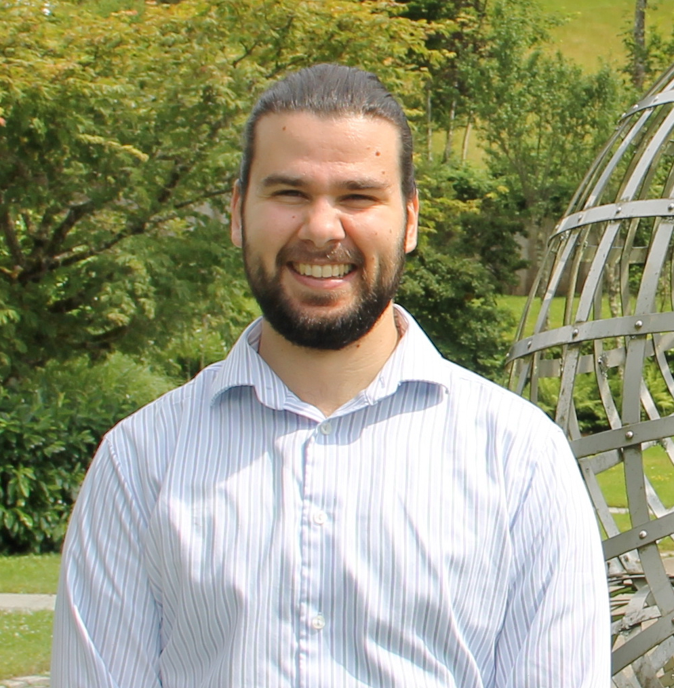

Tudor Manole
Norbert Wiener Postdoctoral Associate
Statistics and Data Science Center
Massachusetts Institute of Technology
Office: Building E17, E17-481
Email: tmanole [at] mit [dot] edu
I am a Norbert Wiener postdoctoral associate in the Statistics and Data Science Center at the Massachusetts Institute of Technology (MIT). I completed my PhD in the Department of Statistics and Data Science at Carnegie Mellon University (CMU), where I was advised by Sivaraman Balakrishnan and Larry Wasserman. Before joining CMU, I received a Bachelor of Science in Mathematics from McGill University, where I was mentored by Abbas Khalili.
I am broadly interested in nonparametric statistics and statistical machine learning. My theoretical research centers around statistical optimal transport, latent variable models, nonparametric hypothesis testing, and distribution-free inference. Much of my recent work is motivated by interdisciplinary collaborations in the physical sciences, particularly in quantum computing and high energy physics.
My papers can be found below or on my Google Scholar page. Code for all of my research is publicly available via GitHub. My PhD thesis can be found here. Some recorded talks can be found at these links: MIT, UCLA.
I am on the 2025-2026 academic job market. A copy of my CV can be found here.
Preprints
How much can we learn from quantum random circuit sampling?
Manole*, T., Mark* D. K., Gong, W., Ye., B., Polyanskiy, P., Choi, S.
Local Poisson Deconvolution for Discrete Signals.
Hundrieser*, S., Manole*, T., Litskevich, D., Munk, A.
Statistical Inference for Optimal Transport Maps: Recent Advances and Perspectives.
Balakrishnan, S., Manole, T., Wasserman, L.
Stability Bounds for Smooth Optimal Transport Maps and their Statistical Implications.
Balakrishnan, S., Manole, T.
Central Limit Theorems for Smooth Optimal Transport Maps.
Manole, T., Balakrishnan, S., Niles-Weed, J., Wasserman, L.
Uniform Convergence Rates for Maximum Likelihood Estimation under Two-Component Gaussian Mixture Models.
Manole*, T., Ho*, N.
Journal Publications
Randomized and Exchangeable Improvements of Markov's, Chebyshev's and Chernoff's Inequalities.
Ramdas, A., Manole, T.
Statistical Science (To appear).
Background Modeling for Double Higgs Boson Production: Density Ratios and Optimal Transport.
Manole, T., Bryant, P., Alison, J., Kuusela, M., Wasserman, L.
The Annals of Applied Statistics 18(4), 2950-2978, 2024.
Plugin Estimation of Smooth Optimal Transport Maps.
Manole, T., Balakrishnan, S., Niles-Weed, J., Wasserman, L.
The Annals of Statistics 52(3), 966-998, 2024.
Sharp Convergence Rates for Empirical Optimal Transport with Smooth Costs.
Manole, T., Niles-Weed, J.
The Annals of Applied Probability 34(1), 1108-1135, 2024.
Martingale Methods for Sequential Estimation of Convex Functionals and Divergences.
Manole, T., Ramdas, A.
IEEE Transactions on Information Theory 69(7), 4641-4658, 2023.
Minimax Confidence Intervals for the Sliced Wasserstein Distance.
Manole, T., Balakrishnan, S., Wasserman, L.
Electronic Journal of Statistics 16(1), 2252-2345, 2022.
Estimating the Number of Components in Finite Mixture Models via the Group-Sort-Fuse Procedure.
Manole, T., Khalili, A.
The Annals of Statistics 49(6), 3043–3069, 2021.
Conference Publications
Refined Convergence Rates for Maximum Likelihood Estimation under Finite Mixture Models.
Manole, T., Ho, N.
Proceedings of the 39th International Conference on Machine Learning, PMLR 162:14979-15006, 2022.
(Selected for Long Presentation.)
(* Equal Contribution)